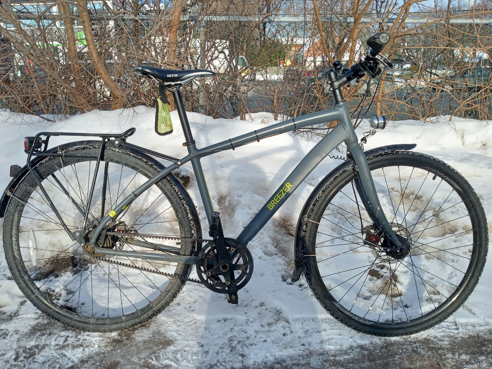

🎉 Welcome to this very plain and opinionated page about four-seasons biking in the city! 🎉 🎉 Bienvenue sur ce site très simple et plein d'opinions sur le vélo quatre saisons en ville ! 🎉

The TL;DR is that there can never be enough pages about biking! Besides, everyone who cycles has different opinions, strategies, experiences or preferred equipment. Sometimes people ask about various topics related to urban or winter biking, and it can be useful to consolidate my journey and what I find works well in a single place so that I can share those links with outsiders. Don't take it too seriously and treat it like one more data point!
En résumé : il n'y aura jamais trop de sites sur le vélo ! Et puis, chaque cycliste a ses propres opinions, stratégies, expériences et équipement préféré. On me pose parfois des questions sur le vélo urbain ou le vélo d'hiver, et c'est pratique de rassembler mon parcours et ce qui fonctionne bien pour moi à un seul endroit, pour pouvoir partager ces liens avec d'autres. Ne prenez pas tout ça trop au sérieux, voyez-le comme un point de vue de plus !
This page covers all kinds of topics around cycling in an urban environment with important seasonal variations. The intention is to address themes such as winter cycling, safety, road sharing, equipement, maintenance, part selection and Montreal-specific issues, without being overly technical.
Ce site aborde toutes sortes de sujets liés au vélo en milieu urbain, dans un climat aux grandes variations saisonnières. L'idée est de traiter de thèmes comme le vélo d'hiver, la sécurité, le partage de la route, l'équipement, l'entretien, le choix des pièces et les enjeux propres à Montréal, sans devenir trop technique.
It is based on my personal experience from biking for over 25 years through my hometown. Lots of the information consolidated here has been collected through trial and (multiple) errors. The point of view is that of a "normal" person trying to ride hassle-free and safely from A to B, which is usually all I am trying to do!
Il s'appuie sur mon expérience personnelle : plus de 25 ans à rouler dans ma ville natale. Une bonne partie de l'information réunie ici a été acquise par essais et (nombreuses) erreurs. C'est le point de vue d'une personne « normale » qui veut simplement aller du point A au point B sans tracas et en sécurité, ce qui est généralement tout ce que je cherche à faire !
Most people do not really care about how their car is designed and operates, and it should be the same thing with a bike. It will not document each and every possible aspect of cycling. There are no exhaustive comparison charts between different products.
La plupart des gens ne se soucient pas vraiment de la conception ou du fonctionnement de leur voiture, et ce devrait être pareil pour un vélo. Ce site ne documente pas chaque aspect possible du vélo. Vous n'y trouverez pas de tableaux comparatifs exhaustifs entre différents produits.
So if you are looking for the ISO size of your nominally 26 inches tire on your 70s Schwinn bike, this might not be exactly the right place for you. Nevertheless, I hope you will find it enjoyable :)
Alors si vous cherchez la taille ISO du pneu de 26 pouces de votre Schwinn des années 70, vous n'êtes peut-être pas au bon endroit. J'espère quand même que vous aurez du plaisir à lire :)
I am located in Montreal, Canada, which gets its fair amount of snow every year. A lot of what you are going to read is based on years of riding in this specific city. It may not necessarily apply to a location with different weather, infrastructure or bike culture!
J'habite à Montréal, au Canada, qui reçoit sa bonne part de neige chaque année. Une grande partie de ce que vous allez lire repose sur des années à rouler dans cette ville en particulier. Ça ne s'applique pas forcément à un endroit où le climat, les infrastructures ou la culture vélo sont différents !
As much as I would love to contribute regularly, I am maintaining this in my free time and one should not expect frequent updates. The web page is barebone on purpose and this should not change in the near term.
J'aimerais bien y contribuer régulièrement, mais j'entretiens ce site dans mes temps libres, alors ne vous attendez pas à des mises à jour fréquentes. Le site est dépouillé exprès et ça ne devrait pas changer de sitôt.
Feedback is a gift! Please reach out to to share stories, make suggestions, flag typos or just to say "hi"!
Vos commentaires sont un cadeau ! Écrivez-moi à pour raconter vos histoires, faire des suggestions, signaler des coquilles ou simplement dire « salut » !